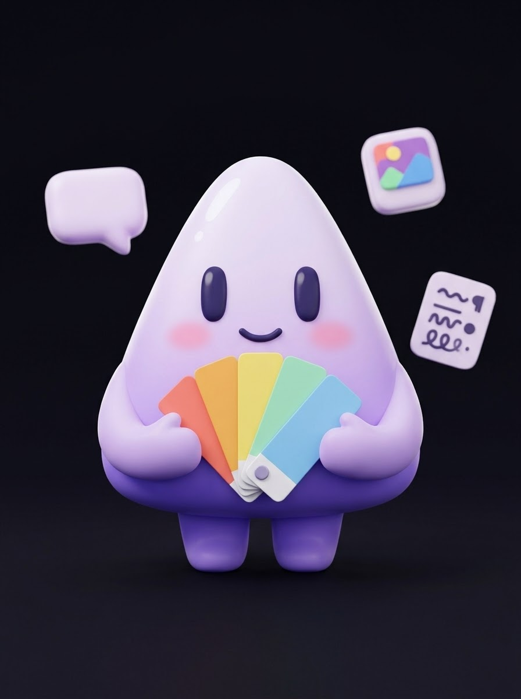
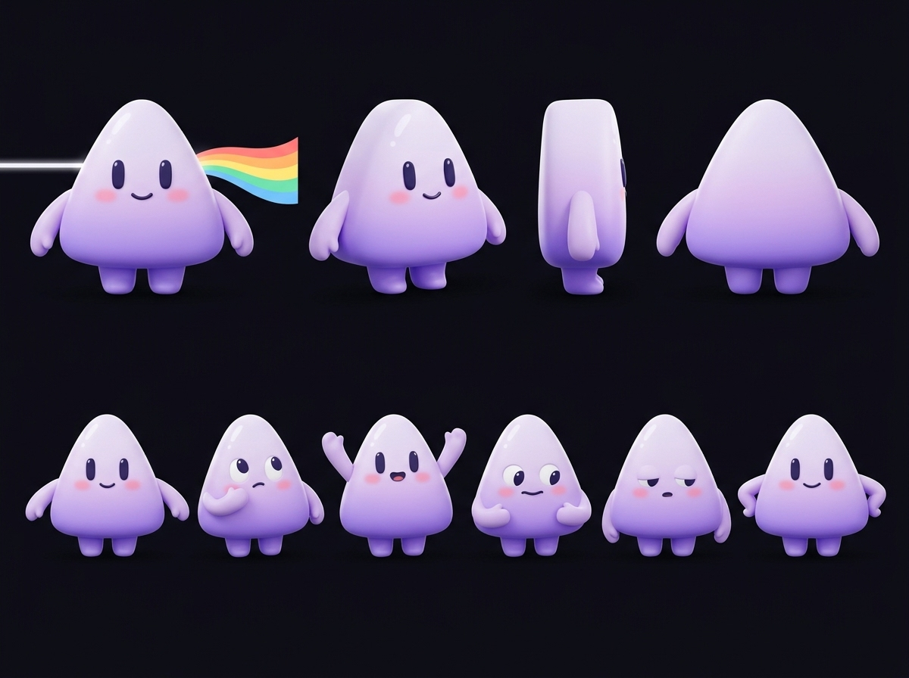

Image drawn by Lumo
Still warm from the oven. Come say hello before the sun is up.
Thu, Nov 5 · 07:30
OpenLumo is an open-source AI marketing studio you run yourself. Paste your website and Lumo plans, writes and draws a month of ads, posts, emails and articles, then waits for your yes.
Each band of light leaving Lumo's prism is a channel. Ads, posts, articles and emails are all written from one Brand DNA, so they sound like the same company on every one of them.
Static ads with a headline, copy and an image drawn to match.
Still warm from the oven. Come say hello before the sun is up.
Thu, Nov 5 · 07:30
Posts and carousels for Instagram, LinkedIn, X, TikTok and Facebook, spread across the month.
Long articles built around what your audience is searching for.
Newsletters and campaigns in your voice, ready to paste into your sender.

Name, voice, audience and three to five competitors, each with its source link.
SSunrise Bakery
https://sunrisebakery.example
Reading pages7 of 10
First it reads
your website.
SSunrise Bakery
https://sunrisebakery.example
Pages read10
Competitors3, with sources
AudienceEarly commuters
Then it researches
the live web.
SSunrise Bakery
Brand DNAReady
Strategy4 pillars
November plan15 drafts
Then it plans
and drafts the month.
SSunrise Bakery
Approved12
Rejected3
Export12 items, ZIP
Ready to download
Then you say yes,
one card at a time.
Every draft lands on a board. Approve it, ask Lumo to write it again, or turn it down. Nothing leaves the board without an explicit yes. Try it on four drafts for a sample bakery.
0 approved · 4 waiting · 0 turned down
Suggested 4
Still warm from the oven. Come say hello before the sun is up.
Real sourdough, baked at 5 every morning. First loaf 10% off.
Subject: What we bake when it gets cold outside
How long should sourdough rise? A baker's honest answer
Approved 0
Approved drafts land here, ready to export.
OpenLumo is the whole studio, not a demo of one. It runs on your own machine or server with Docker Compose: Postgres, a Next.js web app, and a worker that does the slow work in the background while progress streams live to the page. Models come through your own OpenRouter key, stored encrypted and never sent to the browser. You choose the brain that writes and the model that draws, and every job shows what it cost. Your brands, drafts and images stay on your disk. The code is MIT licensed, the job queue is plain Postgres, and the model adapters are typed by capability, so local models can slot in next. Read the code, fork it, send a pull request.
git clone https://github.com/kotlovyim-dev/OpenLumo.gitcp .env.example .envdocker compose uphttp://localhost:3000corepack enable && pnpm installcp .env.example .envdocker compose up -d postgres && pnpm db:migratepnpm devVersion 0.1 researches, plans, drafts and exports. It does not post for you yet, and it says so. This is the order the rest arrives in.

Clone the repository, run docker compose up, and this form is the first thing Lumo shows you.